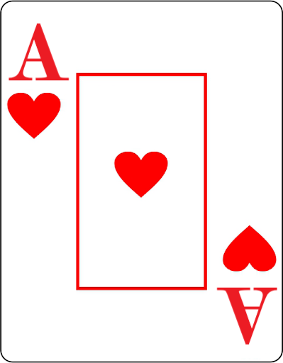
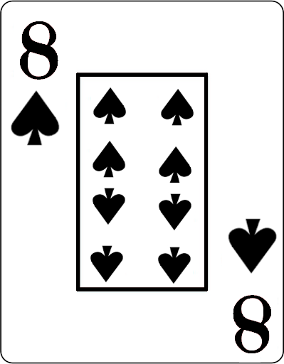

| Início | | Probabilidade | | Exemplo | | Sobre o site |
A probabilidade é uma área da matemática que estuda a chance de algo acontecer. De forma simples, ela nos ajuda a entender quão provável é que um determinado evento ocorra. O cálculo da probabilidade é muito usado em jogos de azar, previsões, estatísticas e no cotidiano para estimar incertezas. Vamos ver como isso funciona e como usar exemplos práticos com baralhos para entender melhor.
A fórmula fundamental para calcular a probabilidade de um evento é:
P=nε/nΩ
Aqui está como aplicar essa fórmula:
Imagine que você tem um baralho de 52 cartas e quer saber a probabilidade de puxar um Ás de Copas. Neste caso:
| P | = | 1 / 52 |
| P | = | ~0,0192... |
| P | = | 0,0192 X 100 |
| P | = | 1,92% |

Agora, vamos calcular a probabilidade de puxar qualquer carta do naipe de Espadas. Em um baralho, existem 13 cartas de Espadas.
| P | = | 13 / 52 |
| P | = | 0,25 |
| P | = | 0,25 X 100 |
| P | = | 25% |

Agora que você entende os conceitos básicos, vamos colocar em prática com exemplos interativos. No site, você pode simular a retirada de cartas de um baralho virtual e verificar a probabilidade de diferentes eventos. Clique aqui para acessar os exemplos.
Com o cálculo de probabilidades, podemos quantificar a incerteza de eventos, seja na matemática, no dia a dia, ou até mesmo ao jogar com cartas de um baralho. A ferramenta interativa do site permite que os alunos vejam esses conceitos em ação, reforçando a compreensão com práticas reais. Isso torna o aprendizado mais dinâmico e eficiente, à medida que eles exploram como funciona a matemática por trás das probabilidades.